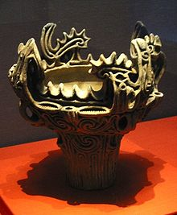
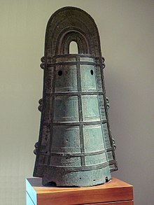

Masa prasejarah Jepang
Zaman paleolitik.jpg)
Zaman Paleolitik Jepang berlangsung dari sekitar 100.000 hingga 30.000 SM, dimulai dari penggunaan perkakas batu dan berakhir sekitar 12.000 SM pada akhir zaman es terakhir yang sekaligus awal dari periode Mesolitik zaman Jōmon. Bukti-bukti penggalian arkeologi menunjukkan kepulauan Jepang sudah dihuni orang sejak 35.000 SM. Kepulauan Jepang terpisah dari daratan Asia setelah zaman es terakhir sekitar 11.000 SM. Setelah terungkapnya pengelabuan zaman Paleolitik Jepang oleh peneliti amatir Shinichi Fujimura, bukti-bukti asal zaman Paleolitik Bawah dan zaman Paleolitik Tengah yang diklaim oleh Fujimura dan rekan-rekan telah diteliti ulang dan ditolak.
Zaman Jōmon
Zaman Jōmon berlangsung dari sekitar 14.000 SM hingga 300 SM. Tanda-tanda pertama peradaban dan pola hidup stabil manusia muncul sekitar 14.000 SM dengan adanya kebudayaan Jōmon yang bercirikan gaya hidup pemburu-pengumpul semi-sedenter Mesolitik hingga Neolitik. Mereka tinggal di rumah-rumah yang dibangun di atas tanah yang digali dan di atasnya didirikan rumah beratap dari kayu. Orang Jōmon sudah mengenal bentuk awal dari pertanian, tetapi belum mengenal cara menenun kain dan pakaian dibuat dari bulu binatang. Orang zaman Jōmon mulai membuat bejana tanah liat yang dihias dengan pola-pola yang dicetakkan ke atas permukaan bejana sewaktu masih basah dengan menggunakan tongkat kayu atau tali atau simpul tali. Walaupun hasil penelitian menimbulkan keragu-raguan, menurut tes penanggalan radiokarbon, beberapa contoh tembikar tertua di dunia berasal dari Jepang, disertai pisau belati, giok, sisir dari kulit kerang, dan barang-barang keperluan rumah tangga lainnya berasal dari abad ke-11 SM. Boneka tanah liat yang disebut dogū juga ditemukan dari situs ekskavasi. Barang-barang rumah tangga menunjukkan kemungkinan ada rute perdagangan yang jauhnya sampai ke Okinawa. Analisis DNA menunjukkan bahwa penduduk asli Hokkaido dan bagian utara Pulau Honshu yang disebut suku Ainu adalah keturunan orang zaman Jōmon dan merupakan keturunan dari manusia pertama penghuni Jepang.
Zaman Yayoi Zaman Yayoi berlangsung dari sekitar 400 SM atau 300 SM hingga 250 Masehi. Dari situs arkeologi kota Yayoi, distrik Bunkyō, Tokyo ditemukan artefak asal zaman yang kemudian disebut zaman Yayoi. Pada awal zaman Yayoi, orang Yayoi sudah mulai dapat menenun, bertanam padi, mengenal perdukunan serta pembuatan perkakas dari besi dan perunggu yang dipelajari dari Korea atau Tiongkok. Sejumlah studi paleoetnobotani menunjukkan teknik menanam padi di sawah dan irigasi sudah dikenal sejak sekitar 8000 SM di Delta Sungai Yangtze dan menyebar ke Jepang sekitar 1000 SM. Dokumen tertulis yang pertama kali menyebut Jepang adalah Buku Han akhir asal 57 Masehi. Buku tersebut mengisahkan, "Di seberang lautan dari Distrik Lelang tinggal orang-orang Wa. Mereka ada lebih dari 100 suku, mereka sering datang dan membayar upeti." Catatan Sejarah Tiga Negara dari abad ke-3 mencantumkan negara yang terbentuk dari kumpulan 30 suku-suku kecil yang diperintah oleh dukun wanita bernama Himiko dari Yamataikoku. Semasa Dinasti Han dan Dinasti Wei, pengelana Tiongkok tiba di Kyushu dan mencatat tentang para penduduk yang tinggal di sana. Menurut para pengelana Tiongkok, mereka adalah keturunan dari Paman Agung (Tàibó) dari negara Wu. Penduduk di sana juga menunjukkan ciri-ciri orang Wu pra-Tiongkok yang mengenal tato, tradisi mencabut gigi, dan menggendong bayi. Buku Sanguo Zhi mencatat ciri-ciri fisik yang mirip dengan ciri-ciri fisik orang yang digambarkan dalam boneka haniwa. Laki-laki berambut panjang yang dikepang, tubuh dihiasi tato, dan perempuan mengenakan pakaian terusan berukuran besar. Situs Yoshinogari adalah situs arkeologi terbesar* menerus selama ratusan tahun. Hasil ekskavasi menunjukkan artefak tertua berasal dari sekitar 400 SM. Di antara artefak yang ditemukan terdapat perkakas besi dan perunggu, termasuk perkakas dari Korea dan Tiongkok. Dari barang-barang peninggalan diperkirakan orang zaman Yayoi sudah sering melakukan kontak dan berdagang dengan orang dari Daratan Tiongkok.